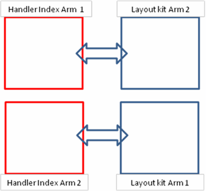

Service History
Subject: Index Arm 2 Device Drop due to insert free play on Layout kit
Handler Model: NS-8080
Controller: RC520
Date: 22 Feb 2011
Symptom
NS-8080 Index Arm 2 device drop for Octal Layout Kit.
Action
Finding on the Octal site change kit.
· Upon using combination of layout kit Arm 1 on Index Arm 1. – No device drop
· But using layout kit Arm 2 on Index Arm 2. – Device drop (Scenario 1)
· Upon swapping of layout kit between handler Index arm. – No device drop. (Scenario 2)
· Handler alignment has been counter verify by Getech service guys. – No issue
Guide pin used: ø3.9mm
Semitron nest.
|
Scenario 1
|
Scenario 2
 |
Cause
Layout kit base has insert, but when it implement on ASESG layout kit?
And the insert has free-play and cause theta upon securing to handler Index arm.
Insert is implement for cost saving but on the another way insert has too much freeplay.
We should review on this design again.